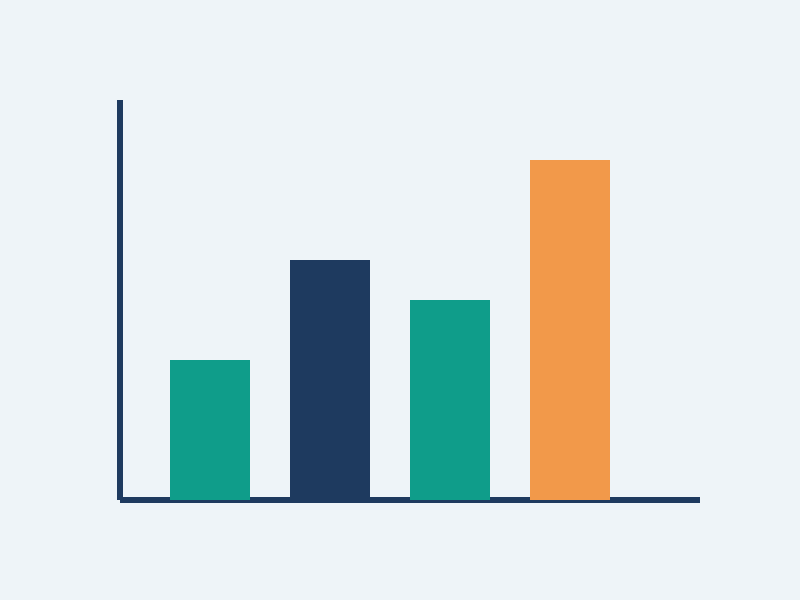
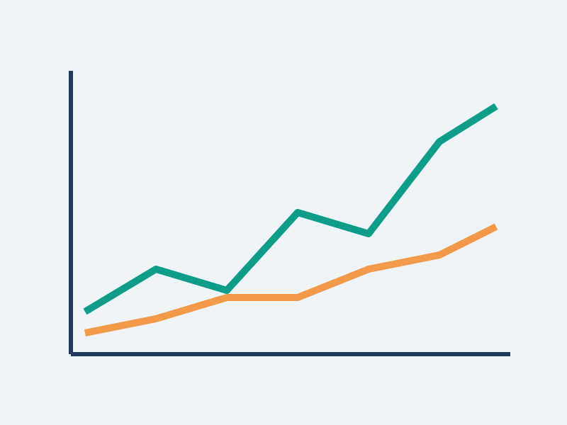
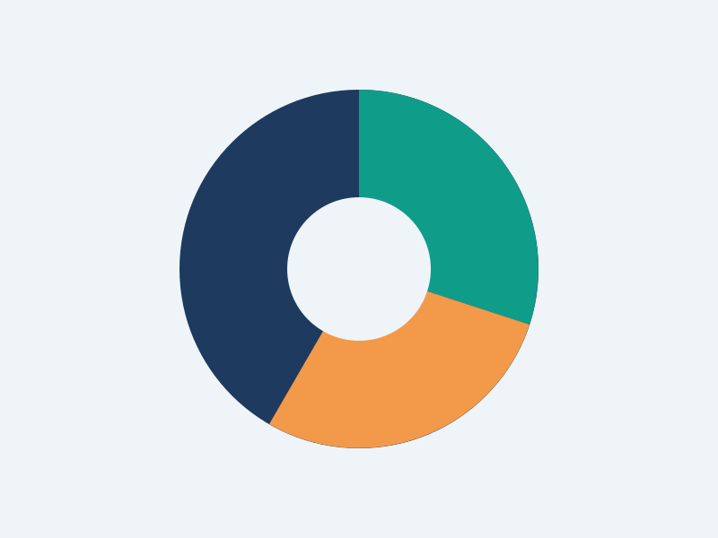
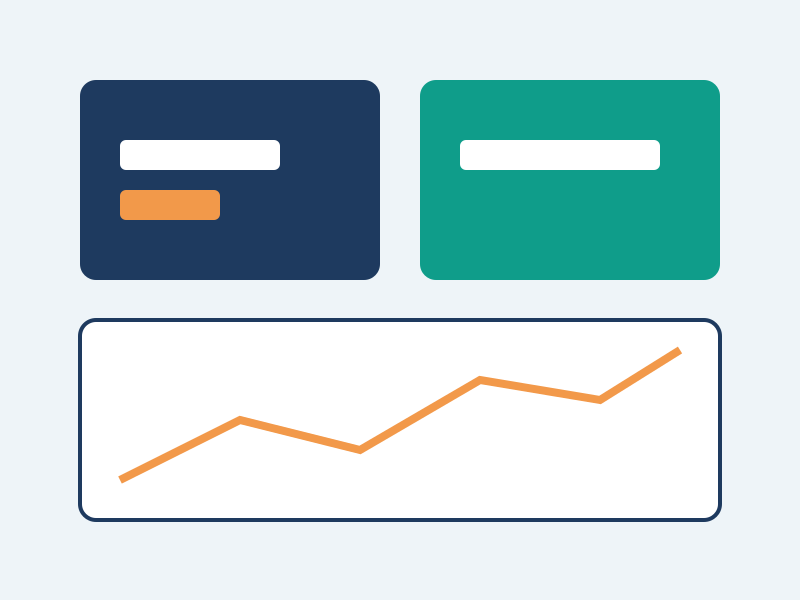
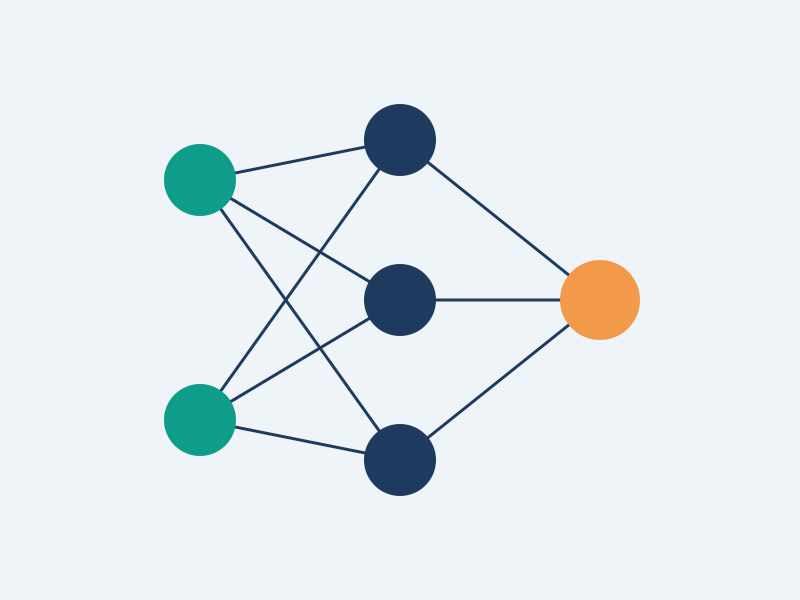
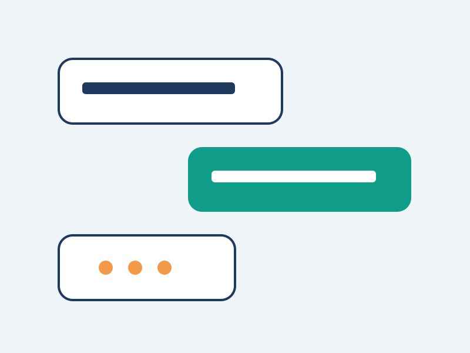
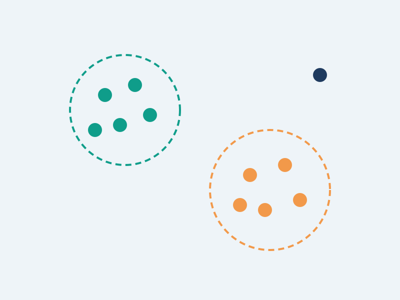
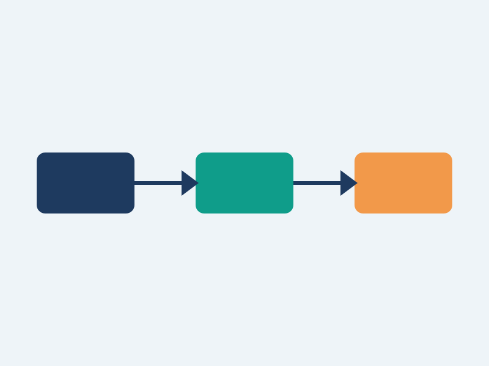

Galería de proyectos
Ejemplos ilustrativos del tipo de soluciones que ofrecemos. Puedes filtrarlos por categoría.
Filtrar por categoría
Mostrando las 10 imágenes.
Imágenes
-

Comparación de ventas Gráfico de barras para comparar resultados entre periodos. -

Tendencias en el tiempo Líneas que muestran la evolución de dos indicadores. -

Distribución por segmentos Gráfico circular con la proporción de cada grupo de clientes. -

Tablero de indicadores Panel que reúne las métricas clave del negocio en una sola vista. -

Modelo predictivo Red neuronal que aprende de datos históricos para anticipar resultados. -

Asistente virtual Atención automática de consultas frecuentes de clientes. -

Detección de patrones Agrupación de datos similares e identificación de casos atípicos. -

Flujo de trabajo Procesos que avanzan de un paso al siguiente sin intervención manual. -
Integración de sistemas Conexión entre herramientas para que compartan información. -
Tareas programadas Reportes y respaldos que se ejecutan automáticamente en fechas definidas.